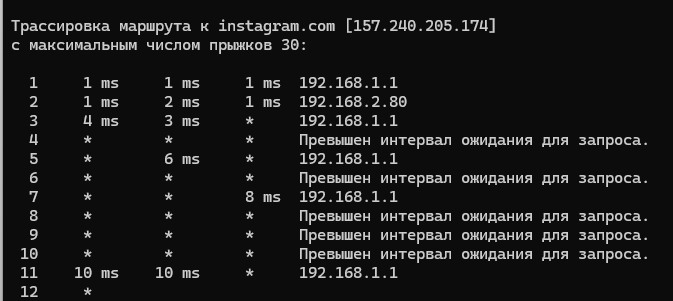
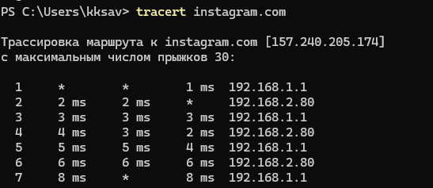
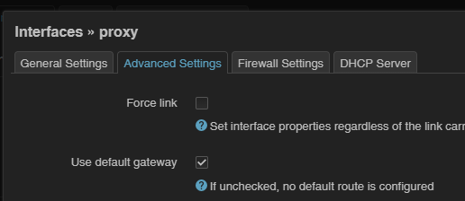
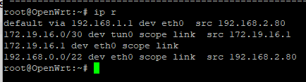
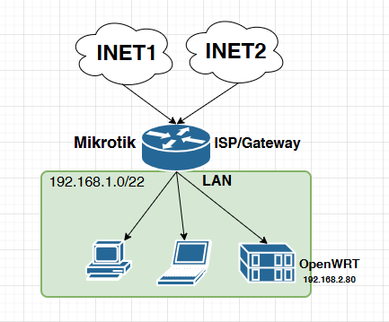
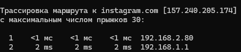

mangle:
add action=mark-routing chain=prerouting comment=
“Mark routing for my IP only” new-routing-mark=vless passthrough=yes
src-address=192.168.1.14
routing table
add comment=“Routing table for out VLESS” disabled=no fib name=vless
Что получилось:
Если я указываю на ноутбуке шлюз 192.168.2.80:
недоступные сайты становятся доступными
команда в терминале tracert instagram.com:
1 <1 мс <1 мс <1 мс 192.168.2.80
2 2 ms 1 ms 1 ms 192.168.1.1
3 * * * Превышен интервал ожидания для запроса.
Если я указываю на ноутбуке шлюз 192.168.1.1: Н
недоступные сайты остаются недоступными
команда в терминале tracert instagram.com:
1 <1 мс <1 мс <1 мс 192.168.1.1
2 * * * Превышен интервал ожидания для запроса.
Вопросов несколько:
Не пойму идет ли трафик с микротика на VM?
Почему tracert с ноутбука идет через 192.168.1.1, а не в туннель?
2024-11-03T04:54:21.651Z
s.v.d(00svd00)
Маскарадинг забыли
2024-11-03T04:59:49.724Z
kks
Где именно?
2024-11-03T05:00:38.815Z
s.v.d(00svd00)
Судя по симптомам - везде. На виртуалке всего траффика, идущего в гейтвей, на некротике всего траффика, идущего в виртуалку. И в мангл правило сразу добавьте условие, исключающее пакеты, идущие от вашей виртуалки. В будущем, когда начнёте настраивать по листам, поможет избежать закольцовывания. Но вообще ИМХО гораздо проще настроить схему, где в самом xray поднимается wireguard inbound в кач-ве входного интерфеса. Накладные расходы на него околонулевые, а настройка становится сильно проще.
Я вот тут расписывал. Там правда xray живёт в контейнере в самом некроте, но смысл тот же
2024-11-03T05:04:56.847Z
kks
Спасибо за ответ.
Я прочел вашу ветку от начала до конца, но не смог перенести на свою конфигурацию
Мне так же необходимо создавать VETH и bridge? Если нет, то что и куда маскарадить на микроте?
2024-11-03T05:16:34.590Z
s.v.d(00svd00)
Не, это чисто для функционирования контейнеров. Мы создаём виртуаоьный эзернет, в который они виртуально подключаются и раздаём им там некую частную подсетку. В вашем случае просто будет реальный порт и та же подсеть, что и остальные домашние железки, но смысл тот же. Единственное что, я не уверен что sign-box умеет в wg-inbound. Возможно, имеет смысл перекатиться на xray?
2024-11-03T05:20:33.243Z
kks
wireguard inbound точно не поддерживается в sing-box.
Если не создавать wg подключение от Микрота к VM, какие у меня есть дальнейшие варианты действия?
Убрал правило у микрота
add action=drop chain=forward comment=“Drop everything else” log-prefix=kks
И стали грузиться сайты)))
У меня образовалась петля?

2024-11-03T05:50:13.462Z
s.v.d(00svd00)
Похоже на то. А у вас точно tun стоит дефолт гейтвеем в вашей виртуалке с sign-box? Почему-то траффик залетает на некрот оттуда, хотя по хорошему должен в tun
2024-11-03T06:14:54.286Z
kks
Сделал правило на микротике:
add action=accept chain=forward comment=VLESS routing-mark=vless
Вернул
add action=drop chain=forward comment=“Drop everything else” log-prefix=kks
2024-11-03T06:15:52.227Z
kks

Сайты долго но открываются
2024-11-03T06:17:22.461Z
kks
Если бы я знал как посмотреть default gateway
Сейчас буду читать инструкции
2024-11-03T06:19:45.774Z
kks

Вроде стоит галка
2024-11-03T06:21:16.938Z
s.v.d(00svd00)
Вы пока обождите мучать некрот. Добейтесь сначала того, чтобы вы могли приссшиться на виртуалку с sign-box и оттуда курлануть заблоченный хост. И вот уже когда заведётся - тогда на самой виртуалке нужно добавьте маскарадинг
Аля
И дальше уже на некроте туда заворачивайте.
Точно как вы делали, манглом марк роутинг и маскарадинг всего траффика до ip вашей виртуалки
Дык ip route
Ну или ip -6 route
Для ipv6.
2024-11-03T06:22:20.880Z
kks
ip r:

ip -6 r
нет, т.к. выключен ipv6
На новой openWRT нет iptables
2024-11-03T06:28:54.304Z
s.v.d(00svd00)
Ну значит nft add rule nat postrouting oif tun0 masquerade
Что-то же должно там быть?)
А чем обусловлен выбор именно openwrt? Почему бы на виртуалку не закатить например дебиан
2024-11-03T06:46:04.712Z
kks
OpenWRT выбран из-за его маленьких размеров. Хотел поделиться со всеми образом VM
2024-11-03T06:57:46.569Z
kks
На неделе попробую debian.
Давайте совместными усилиями осилим создание VM для использования под открытие неоткрывающихся файлов. И желательно маленького размера с маленьким аппетитом к ресурсам.
Моих знаний явно недостаточно, я всё что мог у себя сделать - сделал.
2024-11-03T07:19:25.508Z
kks
Что только я не делал в файлах network и firewall. Никакого результата - петля остается
2024-11-05T04:46:00.178Z
MasterYoba
Без схемы сложно понять, что пытаетесь настроить. Ниже приложу свою схему своей собственной домашней сети, где я настроил, как мне кажется, именно то, что вы хотите сделать, только вместо микрота у меня opnsense, а вместо опенврт ubuntu-server с синг боксом. Стрелками показаны пути прохождения трафика через/в обход прокси согласно правилам PBR. Трафик в сторону прокси пойдёт через интерфейс vlan10 роутера, а проксированный трафик будет возвращаться на vlan20 и далее уходить в интернет.
Ориентируйтесь на эту схему, использование двух линковочных интерфейсов помогает избежать петель и прочих неудобств. В tun синг бокса попадает то, что приходит на интерфейс vlan 10, а на vlan 20 настроено iptables -t nat -A POSTROUTING -o vlan20 -j MASQUERADE
Маршрут по умолчанию на убунту через vlan 20, прописан обратный маршрут до LAN через vlan 10:
@ubnt:~# ip route
default via 10.0.20.1 dev vlan20 proto static metric 100
10.0.10.0/30 dev vlan10 proto kernel scope link src 10.0.10.2
10.0.20.0/30 dev vlan20 proto kernel scope link src 10.0.20.2
172.16.1.0/24 via 10.0.10.1 dev vlan10 proto static metric 100
@ubnt:~# ip a
1: enp6s18: <BROADCAST,MULTICAST,UP,LOWER_UP> mtu 1500 qdisc pfifo_fast state UP group default qlen 1000
link/ether bc:24:11:0f:74:19 brd ff:ff:ff:ff:ff:ff
inet6 fe80::be24:11ff:fe0f:7419/64 scope link
valid_lft forever preferred_lft forever
2: vlan10@enp6s18: <BROADCAST,MULTICAST,UP,LOWER_UP> mtu 1500 qdisc noqueue state UP group default qlen 1000
link/ether bc:24:11:0f:74:19 brd ff:ff:ff:ff:ff:ff
inet 10.0.10.2/30 brd 10.0.10.3 scope global vlan10
valid_lft forever preferred_lft forever
inet6 fe80::be24:11ff:fe0f:7419/64 scope link
valid_lft forever preferred_lft forever
3: vlan20@enp6s18: <BROADCAST,MULTICAST,UP,LOWER_UP> mtu 1500 qdisc noqueue state UP group default qlen 1000
link/ether bc:24:11:0f:74:19 brd ff:ff:ff:ff:ff:ff
inet 10.0.20.2/30 brd 10.0.20.3 scope global vlan20
valid_lft forever preferred_lft forever
inet6 fe80::be24:11ff:fe0f:7419/64 scope link
valid_lft forever preferred_lft forever
2024-11-05T12:20:48.129Z
kks
Схема простая. Никаких VLAN:

Mikrotik через mangle часть пакетов передает на OpenWRT, а OpenWRT через sing-box должна трафик убрать в туннель до VPS.
Всё вроде работает, но как то медленно.
И когда делаю tracert с компьютера в сети, там как-будто петля от 192.168.1.1 и 192.168.2.80, даже когда на компьютере вручную ставлю gateway 192.168.2.80:
2024-11-06T04:52:36.367Z
Dhohbr
На микротике создайте интерфейс veth или vlan, bridge, не важно. И повешайте на него адрес 172.19.16.2/30. И в маршруте VLESS укажите gateway=172.19.16.1 distance=2
2024-11-06T05:23:32.354Z
kks
Создал veth, изменил route. Перестало вообще работать
Проблема, как мне кажется, в настройках именно VM, ведь при прямом указании на компьютере gateway 192.168.2.80 tracert все равно идет на 192.168.1.1

2024-11-06T09:45:46.319Z
mike7
У вас маска /22, все живет в одном сегменте. Форвардинг работать не будет и соответственно маскарад.
Вам посоветовали сделать интерфейсы, нужно по 2 интерфейса на микроте и виртуалке (вход и выход). А потом уже настраивайте маршрутизацию и pbr.
2024-11-06T10:06:56.448Z
kks
Вопрос: почему же с текущими настройками работает? Хотя и непонятно как
2024-11-06T12:01:16.041Z
Dhohbr
Тогда, возможно, нужно OpenWRT в другую сеть уводить. Или разбираться как там tun маршрутизируется, я с sing-box не знаком.
А вы хотите именно схему с отдельной виртаулкой? Ваш микротик не тянет докер?
2024-11-06T12:16:32.934Z
mike7
У вас fasttrack включен? Очень интересные эффекты бывают ).
Вообще лучше маркировать соединения, исключать их из fasttrack маркировать маршруты только исходящего трафика. С ipv6 еще интереснее.
а как вы “маршрутизируете” в одном сегменте я не знаю
2024-11-06T14:08:33.223Z
kks
Mikrotik не тянет
Вопрос у меня возник: а как у Вас, у знающих этот вопрос людей, выглядит tracert instagram.com с любого windows компьютера в сети когда установлен контейнер на mikrotik или на VM
Меня смущает, что VLESS - это не VPN, а прокси (хотя клиент v2raytun на iOS создает VPN подключение). Поэтому tracert возможно не подходит для проверки работоспособности sing-box на VM OpenWRT?
2024-11-13T16:26:52.014Z
kks
Отвечу сам себе
Сделал в network
config route
option interface ‘lan’
option target ‘172.16.250.1/30’
и вуаля:
{kind=link}
{kind=link}